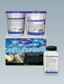
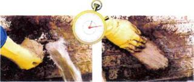
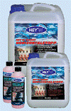
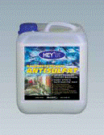
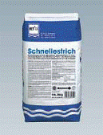
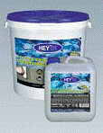
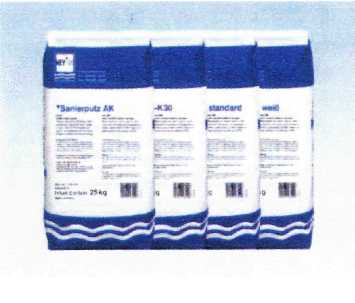
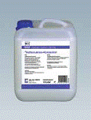

Санация старых построек
Aquastopp

Компоненты системы:
а) Специальные шламы
b) Закрепитель Puder-Ex
c) Окремнитель изоляционный
d) Покрытие, наносимое распылением
e) Штукатурка ремонтная
Области применения:
- Подвалы, шахты, туннели, подземные гаражи, резервуары для воды и т.п.

- Не требуется спуск грунтовых вод
- Может применяться при наличии текущей напорной воды
- Останавливает прорывы воды за секунды
- Проверено под давлением до 70 м водяного столба
Окремнитель Kiesey/K6

Компоненты системы:
a) Окремнитель Kiesey или К6 d) Эластичный шлам К11
b) Шлам для сверленых отверстий е) Покрытие, наносимое распылением
c) Антисульфат f) Штукатурка ремонтная
Области применения:
- Подвалы, колодцы, туннели, подземные гаражи, водные резервуары и т.п.
- Для долгосрочного осушения влажных стен
- Для каменной кладки, бетона, кладки
- Слабовязкая смесь - дополнительно укрепляет строительную субстанцию

Слабовязкий водянистый раствор, используемый как сопутствующая мера при санации каменной кладки и при последующей гидроизоляционной обработке подвалов для предохранения влажной кладки от воздействия вредных солей.
Характеристика продукта: Этот высокоэффективный продукт обеспечивает не растворяемую в воде связь агрессивных солей, создавая тем самым первичную предпосылку для последующего нанесения долгосрочного санирующего покрытия.

Покрытие, наносимое распылениемПолимеро-модифицированный грунтовочный раствор с хорошей силой сцепления, в том числе, и на проблемных основах.
Области применения:
Средство применяется как прочное, хорошо сцепляющее промежуточное звено под штукатурку на основаниях минерального происхождения.
- Обеспечивает очень хорошее сцепление на основах минерального происхождения·
- Будучи усилено концентратом адгезионной эмульсии, может применяться также на очень гладких или плохо впитывающих основах
- Средство устойчиво к морозу и к солям оттаивания

2-х компонентный уплотняющий шлам с очень хорошим сцеплением на основах минерального происхождения
Области применения:
Для надёжной и долгосрочной гидроизоляции подвалов, колодцев и т.п. Для использования как в старых, так и в новых строениях для защиты от напорной воды как с позитивной, так и негативной стороны
- Покрытие способно уже вскоре после нанесения выдерживать нагрузки; непроницаемо для напорной воды
- Устойчиво к морской воде и морозу
- Покрытие имеет сертификаты ведомственной проверки

Штукатурка ремонтная К30/АК/стандартная/белая «Дышащие», водоотталкивающие санирующие штукатурные растворы на цементной основе с хорошей до экстремальной паропроницаемостью
Области применения:
Для санации сырой кладки и для повторного оштукатуривания кладки, повреждённой морозом и солями
- Защита от водного конденсата, препятствует образованию плесени, пятен и т.п.
- Наносится в 1 - 2 рабочих этапа. Минимальная толщина слоя - 2 см
- Средство устойчиво к морозу и к солям оттаивания
- Средство прошло проверку по рекомендациям WTA (научно-технической комиссии по охране памятников культуры) 2-2-91 ( Штукатуркаремонтная АК + Штукатурка ремонтная К30)
- Средство может использоваться также для оштукатуривания цокольной части сооружений (Штукатурка ремонтная стандартная)

Адгезионная эмульсияПреимущества средства:
- Улучшение связывающей прочности покрытия основы
- Повышение износоустойчивости покрытия
- Повышение прочности при сжатии, растяжении и изгибе
- Повышение эластичности и лёгкости выработки покрытия
- Уменьшение дефектов усадки и напряжений в процессе просыхания больших площадей покрытия
- Уменьшение опасности образования трещин
- Улучшение морозоустойчивости и сопротивляемости вредным химическим воздействиям
Загрузить полную версию – Санация старых построек